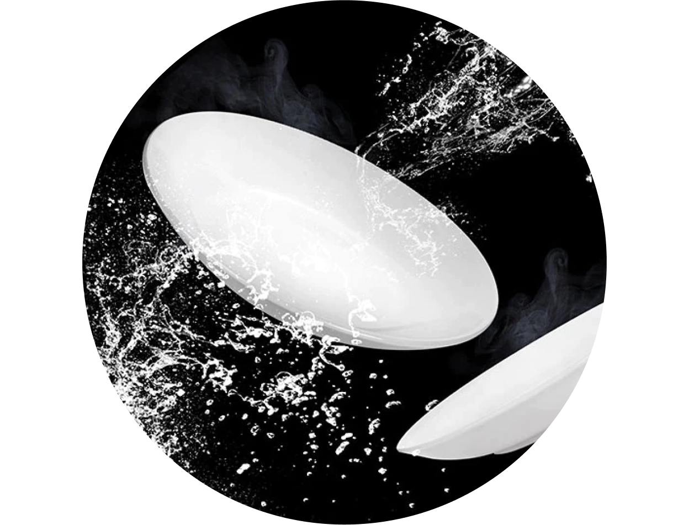
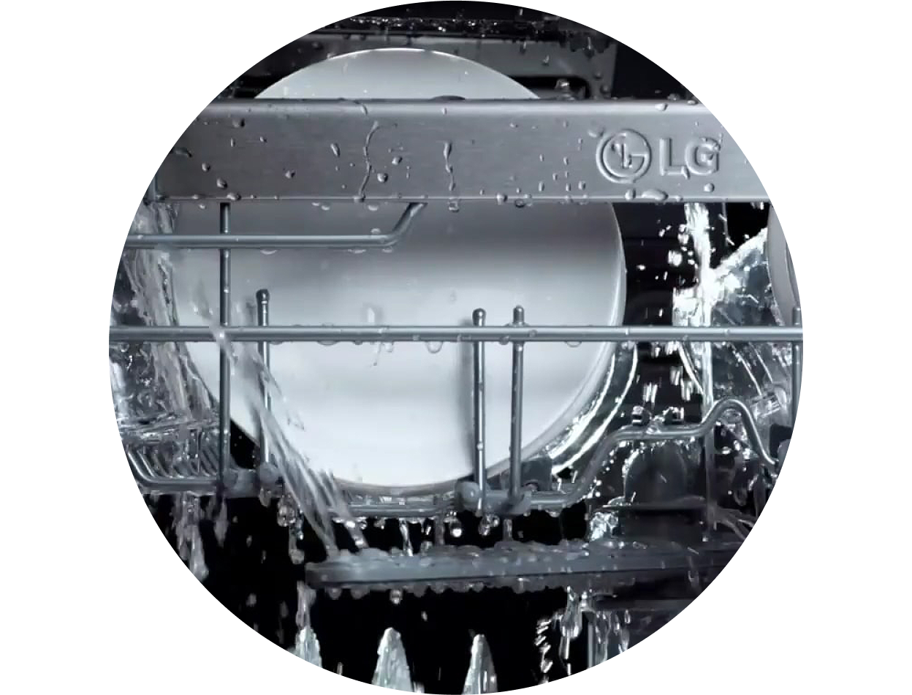
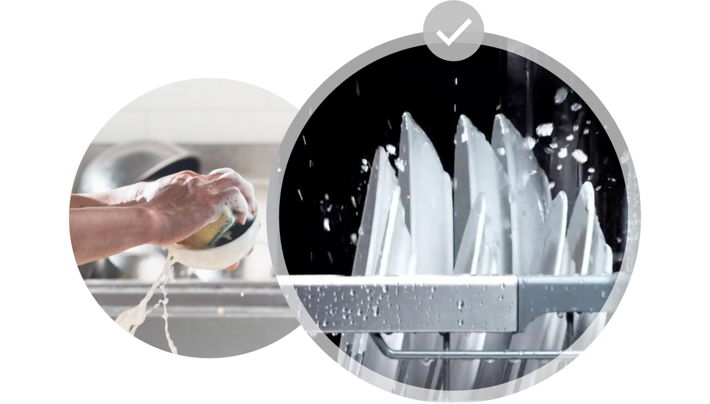

주방식기세척기


보다 더 스마트한 일상
LG ThinQ의 시작

보다 더 스마트한 일상, LG ThinQ
씽큐는 사람과 가전을 AI 기술로 연결하여 더 편리하고 놀라운 일상을 만드는 LG전자의 스마트 홈 플랫폼입니다.
* 본 콘텐츠는 ThinQ 앱의 콘텐츠입니다.
손으로 설거지할 때 보다 식기세척기의 세척이 더 잘 될까요?
식기세척기를 사용해 보지 않은 소비자를 대상으로 한 미니 포커스 그룹의 사전 인터뷰에서는 식기세척기에 대한 막연한 불신의 의견들이 있었어요.
1. 왠지 찝찝함
2. 손 설거지에 비해 확신할 수 없음
3. 물과 전기 사용의 효율성이 낮을 것 같음
4. 애벌 세척, 식기 넣기 및 빼기 등 어차피 번거로움
5. 전용 세제에 대한 불안감
6. 오목한 우리나라 식기에 맞지 않을 것 같음
다만 손 설거지보다 세척력이 우수하고 식기세척기에 대한 걱정이 해소된다면 식기세척기를 구매할 계획이 있다는 의견도 나왔죠.
그렇다면 식기세척기가 손 설거지보다 세척이 잘 되는지 확인해 볼까요?
세척력
균일하게 높은 세척력, 식기세척기
LG전자는 부산대학교 감각과학연구실과 함께 12인용 식기세척기와 손 설거지의 세척 성능 및 효율성을 비교하는 실험을 해 보았어요.
실험자들은 식기를 물에 불린 후 세척하거나, 세제를 사용하여 세척한 다음 헹구는 등 물을 다양한 방식으로 사용했지요.
손 설거지는 수행하는 사람에 따라 결과의 차이도 있을뿐더러 잔류 세제도 소량 검출됐지만 식기세척기는 균일하게 잔류 세제가 남지 않는 결과를 보여주었어요.
전체적으로 식기세척기(평균 89.54점)의 세척 성능이 손 설거지(평균 70.78점)보다 약 26% 뛰어남을 확인할 수 있었어요.

세제 사용량
세제도 적게 쓰는 식기세척기
손 설거지는 세제의 양을 사람마다 각자의 감에 의존하여 사용하지만, 식기세척기는 정해진 양만큼만 사용하죠.
두 경우의 각각 세제 사용량을 비교한 결과, 식기세척기(평균 20g)가 손 설거지(평균 55g)보다 평균 약 1/3(삼분의 일) 수준으로 더 적게 사용한다는 것도 확인할 수 있었어요.

물 사용량
불필요한 물 사용량도 줄이는 식기세척기
흔히들 식기세척기가 손 설거지에 비해 물을 더 많이 쓴다고 생각하지만, 그건 오해예요.
식기세척기와 손 설거지 각각의 평균 물 사용량을 비교해 보니 식기세척기(평균 14.2ℓ)가 손 설거지(평균 145ℓ)보다 무려 약 1/10(십분의 일)가량 물을 더 적게 사용한 것으로 나타났어요.

식기세척기의 세척 성능과 효율성이 손 설거지에 비해 월등하다는 것, 이제 아셨죠? 장점이 더 많은 LG DIOS 식기세척기와 함께 설거지옥에서 탈출하세요!


LG ThinQ
ThinQ 하나로 더 좋아지는 일상
일상을 더 편하고 스마트하게 만들어주는 씽큐 앱을 지금 바로 만나보세요.
- #식기세척기
- #설거지
- #손
- #손설거지
- #식기세척기세척력
- #세척력비교
- #세척력
- #그릇세척
출처 및 고지사항
- LG DIOS 식기세척기 - 식기세척기 VS 손설거지 실험영상 1편 >
- 손설거지 행동 연구 결과 보고서(LG전자-부산대학교 감각과학연구실 산학 연구)(2019.05.27)